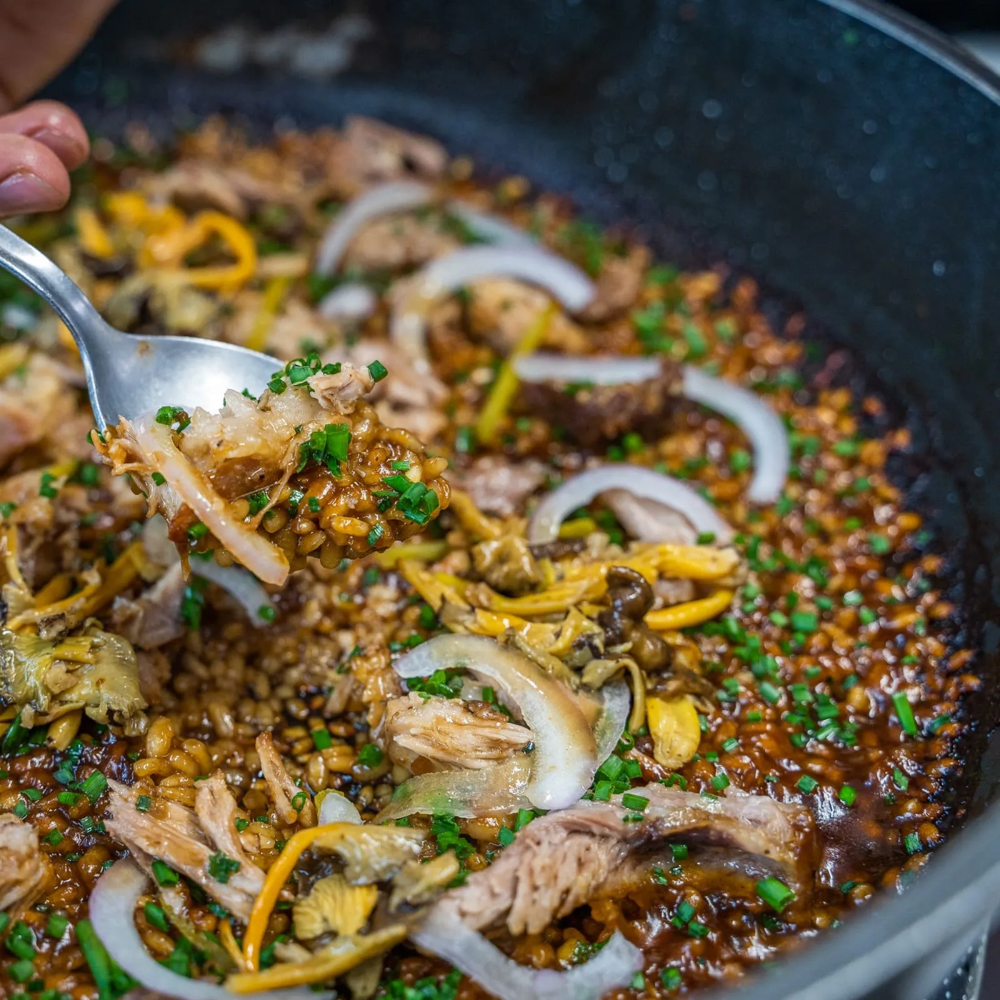

⏲ 20 minuts 👥 2 racions

Us proposem fer un arròs de muntanya amb bolets, aprofitant una elaboració prèvia. En aquest cas es
tracta d'unes costelles de porc rostides i guisades, de les quals utilitzem el suc com a caldo, i un
bon grapat de camagrocs. Aquest arròs d'aprofitament és ideal per a fer-los sortir de qualsevol
compromís d'última hora, i podem adaptar amb qualsevol carn guisada que tinguem a la nevera. El brou
de la carn ens donarà unpunt molt potent, només apte per als més atrevits… Aprofitament al
màxim!
Ingredients:
- 200mg d'arròs
- 250ml de brou de costella
- 250g de costella de porc cuita
- 150g de camagrocs
- 1 ceba de figueres
- 2 cullerades de tomàquet concentrat
- Cibulet
- Cogombrets
- Oli, sal i pebre
- En una cassola o paella, saltem lleugerament amb un raig d’oli un all picat i els 150 g de camagrocs, i reservem.
- Hi sofregim mitja ceba de Figueres picada. Aixequem els sucres amb un raig de vi ranci i afegim després dues culleradetes de tomàquet concentrat.
- Nacrem els 200 g d’arròs i hi afegim els 650 ml de brou de costella de porc o de carn, i coem uns 8 minuts amb el foc bastant alt.
- Abaixem el foc per acabar la cocció i afegim la costella desossada (ha d’estar ja cuita prèviament: nosaltres la vam rostir i guisar).
- Un cop l’arròs estigui al punt de cocció, parem al foc. Acabem amb cibulet picat, làmines de cogombrets envinagrats, làmines de ceba de Figueres, els camagrocs sofregits i una mica de brou per sobre la costella. Deixem reposar tapat 5 minuts i ja podem servir.